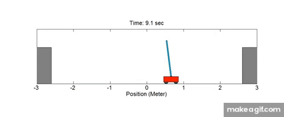
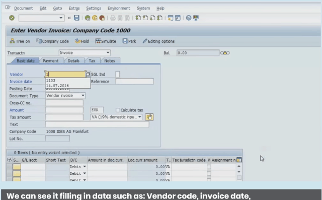
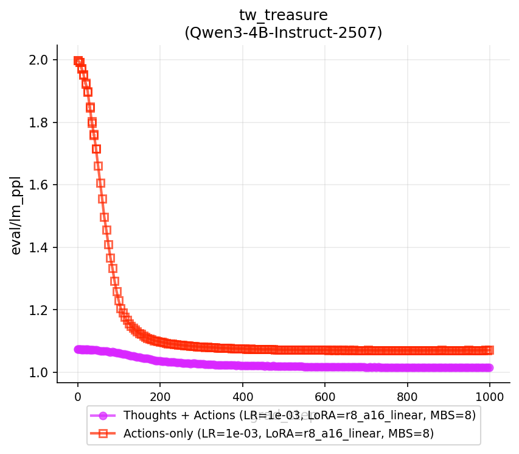
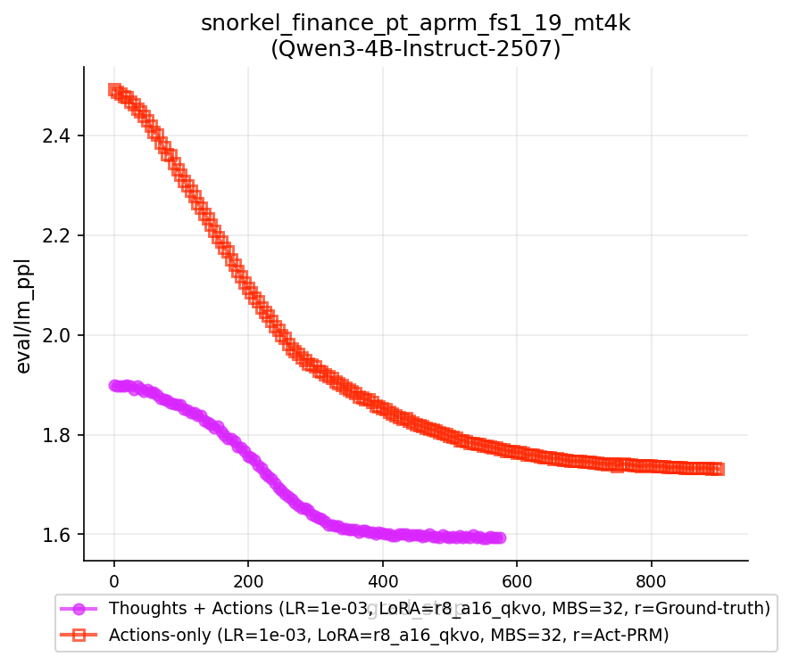
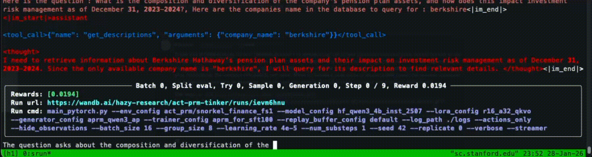
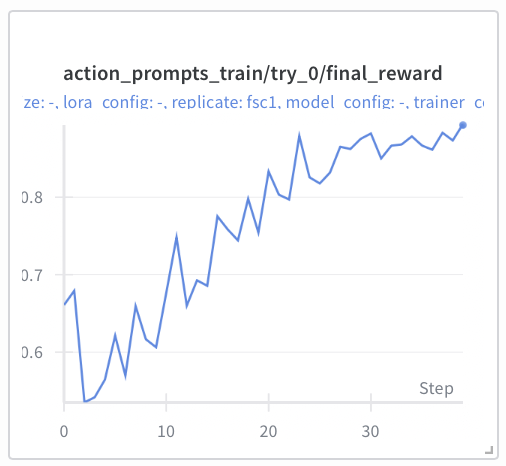
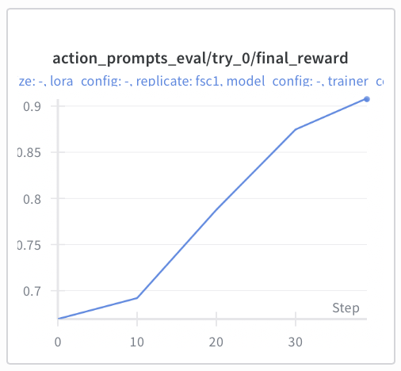
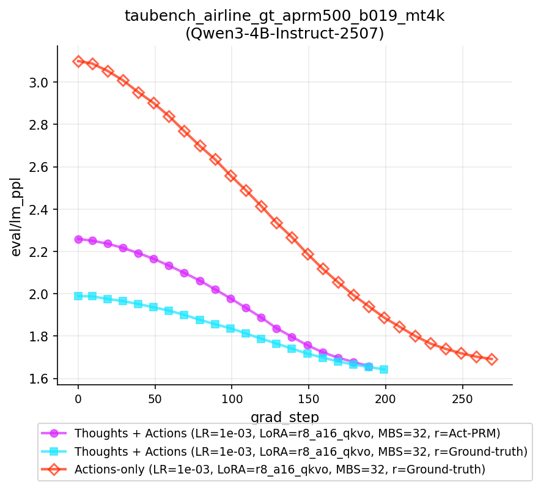

Building and hill-climbing on RL environments is great. But what happens if our workflows are too long and our rewards too sparse? In this post, we explore one alternative: using easy-to-collect, offline demonstrations of past successful trajectories — e.g., the actions recorded in a process log while a human employee does the task today — to guide our LLMs along the way.
Supervised finetuning on these observed actions alone turns out not to provide enough learning signal. Our key idea is that the recorded sequence is only half the picture: missing from it are the human's implicit thoughts between the recorded actions, which supply the connecting context needed to predict what comes next. We train LLMs to infer these thoughts from the actions — scoring each candidate thought by the likelihood it assigns to the action that actually followed — and show this is exactly an Expectation-Maximization algorithm that can be implemented as plain policy-gradient RL.
Four kinds of learning signal for training long-horizon agents; this post builds up to Act-PRMs:
RL rollouts
- Sparse rewards
- Easy to collect
Complete-trace SFT
- Dense signal
- Expensive to collect
Action-only SFT
- Insufficient context
- Easy to collect
Act-PRM (ours)
- Dense rewards
- Sufficient context
- Easy to collect
Hollow blue nodes are latent thoughts z; filled green nodes are explicit actions x; gray nodes are states s.
1Intro + problem
Towards turning LLMs into useful “agents”, we'd like scalable ways to train these models to complete long and tedious tasks — ones that humans might begrudgingly do today. Mechanically, this involves having an LLM think and take actions (generate tool calls, reply to users) iteratively over multiple steps. The final outcome of these actions then determines whether the task was completed successfully or not.
To do this, building environments and training with RL is one option. After all, these tasks are technically verifiable (did the LLM complete the task or not?). However, long multi-turn workflows introduce several challenges, especially for the popular policy-gradient methods of today:
- Sparse rewards / credit assignment. While successful task completion is one true reward signal, verifying success is only possible at the end. For long multi-turn workflows, this single sparse reward exacerbates a classic credit assignment problem: it's difficult to determine which actions contributed to the final outcome, and one poor action resulting in failure can noisily penalize perfectly reasonable prior actions.
- Providing informative intermediate signal. Alternatively, we could try to engineer or shape reward functions that fire more often, e.g., based on the immediate observations following an action. But since these rewards are only intermediate proxies for the final outcome, they can often be hacked. Designing “unbiased” functions where local rewards align with final success remains its own tedious challenge.
- Maintaining scalable training. Finally, to automate a large variety of useful yet undesirable tasks, we'd like training to be easy to deploy for arbitrary workflows — reducing the human effort needed to provide training signal. Existing reward systems, even automated ones (rubric-based LLM-as-judges, process reward models), require additional manual design or data curation. Can we instead have methods where collecting the training signal coincides with humans already having to do the task?


2SFT on demonstrations as an alternative?
Meanwhile, because we are aiming to distill a human's ability to complete a workflow into an LLM, we could consider supervised finetuning (SFT) over sequences of expert demonstrations, i.e., behavioral cloning (BC). By collecting successful demonstrations of a human completing a task and training an LLM on text representations of these trajectories, we get dense next-token prediction signal from work a human was doing anyway.

However, doing so raises its own challenges:
- Scaling Effectively: Remaining faithful to the full trajectory — recording not just actions but a human's chain of thought — introduces annotation effort separate from task completion. This is hard to scale, which especially hurts when (1) BC relies on large amounts of training data, and (2) our dataset size is directly capped by the number of collected demonstrations.
- Providing Enough Context: Limiting the data to action-only demonstrations removes the annotation burden, but may not provide informative-enough learning signal. Consider a task that involves navigating a series of web pages. We can record the sequence of actions automatically as events in a process log (URLs visited, coordinates clicked). But without the surrounding context motivating this sequence, predicting the next action can be challenging.
This leaves us with the 3 common approaches, along with a sign-post of the Act-PRM setup we'll introduce:
RL rollouts
- Sparse rewards
- Easy to collect
Complete-trace SFT
- Dense signal
- Expensive to collect
Action-only SFT
- Insufficient context
- Easy to collect
Act-PRM (ours)
- Dense rewards
- Sufficient context
- Easy to collect
Hollow blue nodes are latent thoughts z; filled green nodes are explicit actions x; gray nodes are states s.
3A motivating study: action-only demonstrations are insufficient context
A natural first attempt at using action-only logs is to train an LLM to predict each explicit action xt from the preceding partial context — standard SFT over action tokens. Since these actions led to success, generating the same target actions at each step should result in successful task completion. Before introducing our method, we ask empirically: do action-only trajectories carry enough context to predict the next action in a successful demonstration?
For each task we collect a corpus of successful trajectories and construct two SFT variants of the same base model (Qwen3-4B-Instruct-2507 + LoRA):
- Action-only SFT — supervise only the explicit action tokens given the action-only context.
- Thoughts + Actions SFT — supervise both thoughts and actions from a full-trajectory context that includes the (oracle / frontier-LM-written) thoughts.
We evaluate on held-out successful trajectories with two inference-time metrics over the ground-truth explicit-action tokens: action-token perplexity and action-token prediction accuracy (top-1 next-token match), across text-world games (TextWorld Treasure Hunter, Coin Collector) and a real tool-calling task (Snorkel Finance Reasoning).
| Task | Action-token PPL ↓ | Action-token Acc ↑ | ||
|---|---|---|---|---|
| Action-only | Thoughts + Actions | Action-only | Thoughts + Actions | |
| Treasure Hunter (TextWorld) | 1.03 | 1.01 | 0.563 | 0.661 |
| Coin Collector (TextWorld) | 1.07 | 1.02 | 0.531 | 0.674 |
| Snorkel Finance Reasoning | 1.25 | 1.14 | 0.053 | 0.144 |
Across the board, the action-only model trails the Thoughts + Actions model by a substantial margin: gaps of 10–14 percentage points of action-prediction accuracy on the text-world games and roughly 9 points on the tool-calling task, with correspondingly higher action-token perplexity. The gap also isn't something more training closes — it's visible over the whole optimization trajectory:


The implication: the explicit-action sequence alone is missing information that the model could exploit if it had access to the interleaved thoughts. This motivates recovering those thoughts from the model itself — the subject of the rest of this post.
4Setup: multi-turn RL
Our setup — states, trajectories, and returnsclick to expand
To ground our approach, we start with the following multi-turn RL setup. For each timestep $t$, our model processes as input context a state $s_t$, generates an action $a_t$, and receives a reward $r_t$. We then transition to the next state $s_{t+1}$ via a next-timestep observation $o_{t+1}$. We use the simple case where new states are a concatenation of the prior state, action, reward, and new observation:
and let trajectory $\tau$ be a complete sequence of observations, actions, and rewards associated with a task completion (or failure), i.e.,
for last timestep $T$. By default, we tie rewards to task completion (success or failure at the final timestep), so
Concretely, we can think of:
- $s_1 = o_1$ as the system prompt, initial task instruction, and any additional environment context,
- $a_1$ as the text generated by the model in response — i.e., thoughts and explicit actions $(z_1, x_1)$,
- $o_2$ as some feedback or response from the environment (tool-call response or user message),
- $s_2$ as just the concatenation of these prior components (e.g., the processed list of dicts following a Hugging Face Transformers chat template),
with similar instantiations for subsequent $t \in [T]$.
Tying objectives to task success
Like most RL setups, for any timestep $t$ we want our model to generate actions that maximize the expected return $J_t$, or (discounted) sum of future rewards. With our sparse rewards and no discounting, letting $R_t$ and $\tau_t$ be the return and trajectory starting at $t$:
In other words, at each timestep $t$, given everything the model's seen before, we want to generate actions that maximize the probability of a successful task completion.
5Training to infer thoughts, given successful demonstrations
Now we begin the steps to back out an RL algorithm for our setting. To recap, we're given access to a sequence of explicit actions $x_t$ and outcomes $o_{t+1}$ from successful human task completions, i.e.,
However, for each action, rather than the full $a_t = (z_t, x_t)$, we only observe $a_t = (x_t,)$, resulting in “partial” trajectories:
We could SFT LLMs over $\dot{\tau}$, since generating the explicit actions $x_t$ is enough to reach a success state. However — as Section 3 just showed — $x_1, \ldots, x_t$ alone may not provide enough context to predict $x_{t+1}$. So we're interested in learning to generate the best interweaving inferred thoughts $\hat{z}_1, \hat{z}_2, \ldots, \hat{z}_T$ to fill in the complete trajectory:
where “best” is determined by the $\hat z$ that make the observed sequence of observations and explicit actions most likely.
6Finding rewards by maximizing our expectations
To find $z$, we'll first connect this objective to Expectation-Maximization (EM) — finding the latent thoughts that make the observed sequence of explicit actions $x$ most likely. We'll then describe how we can implement this as policy-gradient RL, using a likelihood-based reward function over these actions.
Hover any colored term below to see what it is and where it appears across the derivation — click a term (or a legend chip) to pin its highlight. Fix a step $t$ with state $s$ and observed action $x$; superscript $(n)$ marks the frozen parameters of the current EM iteration.
EM setup
Recall that EM iterates over two eponymous steps:
-
Expectation (E): define
$\htmlClass{eq-term term-post}{p_{\theta^{(n)}}(z \mid x, s)}$ as a posterior over the latent
thought $z$ given the explicit action $x$, current state $s$, and latest model weights
$\theta^{(n)}$; and use it to write an expectation over the complete action
log-likelihood:
$$ \mathbb{E}_{z \sim \htmlClass{eq-term term-post}{p_{\theta^{(n)}}(z \mid x, s)}} \left[ \htmlClass{eq-term term-joint}{\log p_\theta(x, z \mid s)} \right] $$
-
Maximization (M): update $\theta$ to maximize our expectation:
$$ \theta^{(n + 1)} = \arg \max_\theta\; \mathbb{E}_{z \sim \htmlClass{eq-term term-post}{p_{\theta^{(n)}}(z \mid x, s)}} \left[ \htmlClass{eq-term term-joint}{\log p_\theta(x, z \mid s)} \right] $$
We iterate between E and M until convergence — finding LLM parameters $\theta^*$ and thoughts $z$ that maximize the likelihood of observed successful human actions $x$. Following this framing in practice:
- In E, we sample many potential thoughts $z$ from the current state and LLM (generating rollouts), use these samples to compute rewards, and construct a training objective (the policy gradient).
- In M, we update the LLM weights according to this objective.
To make this concrete, we next show how to get the rewards and training objective from our EM framing.
From expectation-maximization to policy gradientclick to expand
First, we show an equivalence between the maximization above and policy gradient with certain rewards. This motivates specific rewards for training our thought-generation LLMs. Recall that our expectation is defined as
From Bayes' rule, we have
So plugging this in gives us
That inner swap is the whole trick: an expectation under the posterior (which we can't sample) became an expectation under the policy (which we can — it's just the LLM generating thoughts), with an importance weight left behind. Since we're maximizing this expectation via $\theta$, we can write our objective as
This looks a lot like a policy-gradient objective. Define reward
and we're there!
- As a brief interpretation note, $r(z)$ already hints at what we're rewarding. Ignoring the normalizing denominator for now, we score a given thought $z$ by how likely it is that the observed explicit action $x$ follows.
- However, we still need to resolve some empirical considerations to compute $r$. Note that $\htmlClass{eq-term term-marg}{p_{\theta^{(n)}}(x \mid s)} = \int p_{\theta^{(n)}}(x, z \mid s)\,dz$ is a marginalization over all possible thoughts $z$ — intractable to compute. So we approximate as follows!
Practical empirics — from integrals to a batch of G samplesclick to expand
Finally, we derive a sampling-based version of the above to back out our concrete training algorithm. Let's first define the unnormalized reward $\tilde{r}(z) = \htmlClass{eq-term term-x}{p_{\theta^{(n)}}(x \mid z, s)}$. Then, making the marginalization explicit in our reward's denominator:
Now in both the reward denominator and our maximization objective, we're computing expectations over $\htmlClass{eq-term term-z}{p_{\theta^{(n)}}(z \mid s)}$ — the latent thought distribution parameterized by our LLM in a given state. We can then estimate both quantities by sampling $G$ thoughts per state, and using this same batch of generations to compute empirical means:
So with empirical, group-normalized reward
we recover the policy gradient
A thought is rewarded exactly to the extent that conditioning on it makes the human's observed next action more probable — relative to the other thoughts in its batch. No annotators, no reward model to train, no rubric to write: the model being trained is the reward model. This is what we call an Action Process Reward Model (Act-PRM).
7Practical implementation (it's just policy gradient)
In practice, we can implement this as a standard RL algorithm.
- Generation (Expectation step). Starting with the first prompt state, sample $G$ thoughts $z^{(g)}_t \sim p_{\theta^{(n)}}(z \mid s_t)$ from the LLM.
- Compute a per-timestep reward for each based on the LLM's likelihood over the given explicit action: $\tilde r(z_t^{(g)}) = p_{\theta^{(n)}}(x_t \mid z_t^{(g)}, s_t)$, then group-normalize to $\bar r(z_t^{(g)})$. ← the action-likelihood reward
- Pick the highest-reward thought $\hat z_t$, and transition to the next state $s_{t+1} = (s_t, \hat z_t, x_t, r_t, o_{t+1})$. ← commit the best thought to context
- Repeat until the final timestep $T$, saving each trajectory step for training.
- Policy update (Maximization step). Train the LLM with standard policy gradient: $\nabla_\theta J(\theta) = \mathbb{E} \left[ \bar r(z_t^{(g)}) \, \nabla_\theta \log p_\theta(x_t, z_t^{(g)} \mid s_t) \right]$

Choices for the returnclick to expand
While the EM math above tells us one option — each step's update weighted by that same step's group-normalized reward $R_t = \bar{r}(z_t^{(g)})$, a contextual bandit form with no trajectory-level aggregation — we can consider a couple of different choices for the return $R_t$:
- Contextual bandit (what the EM derivation gives). At each step, generate thoughts that primarily maximize the likelihood of that step's observed action: $R_t = \bar{r}(z_t^{(g)})$, or the unnormalized $R_t = \tilde{r}(z_t^{(g)})$ may work too.
- Trajectory-sum returns. $R_t = \sum_{t'=t}^T \bar{r}(z_{t'}^{(g)})$ — motivated since earlier thoughts do add to the context and impact the generation of later ones.
- Group-mean-centered scores (GRPO-style). Orthogonally, subtract the group mean from each likelihood: $\tilde{r}_\text{grpo}(z_t^{(g)}) = \tilde{r}(z_t^{(g)}) - \frac{1}{G}\sum_{g'=1}^{G} \tilde{r}(z_t^{(g')})$. In practice this may help by giving us negative returns, allowing us to actively downweight the worse half of thoughts in a batch.
The paper trains with option 1 — the form that falls directly out of the EM derivation.
Distilling Act-PRM traces back into the model
After Act-PRM training, we use the trained model to relabel each action-only trajectory with its highest-reward thoughts, producing a synthetic full-trajectory dataset $\{\hat\tau^{(i)}\}_i$. Standard SFT on this dataset then yields a final agent policy — and as we'll see below, this recipe matches or beats SFT on thought-and-action traces written by frontier LLMs on behavioral cloning experiments, at a fraction of the data-collection cost.
8Playground: watch the E-step think
The demo below walks the actual mechanics on a (lightly abridged) trajectory from the Snorkel Finance Reasoning task. Given the current state and a logged action the model has not yet seen, we sample $G = 4$ candidate thoughts, score each by the likelihood it induces on the logged action, and commit the winner to context before moving to the next step.
Inferring the thought behind the next logged action
9Results
We evaluate Act-PRMs on multi-turn agent tasks spanning real-world tool calling (τ²-bench Airline, τ²-bench Retail, Snorkel Finance Reasoning) and embodied text games (TextWorld Coin Collector and Treasure Hunter). We train Qwen3-4B-Instruct-2507 with LoRA using Tinker, with group size $G = 8$ thoughts per state. We found the simple un-normalized EM reward (likelihoods) worked, where (spoiler) we could get Act-PRM-trained models to generate thoughts that close the action-only context gap from Section 3. To expand on this, we discuss three simple results next.
Result 1 — Back to the land of climbable hills
First, as a sanity check, is the action-likelihood reward a hill we can climb at all? Yes! Over Act-PRM training, we found that we could train models to get "better" at thinking, where "better" is measured by the how likely an expert action is to follow, when given the state and the model's thoughts. To keep this honest, we also measured on held-out evaluation trajectories, finding that over RL this "better" thinking could generalize to unseen logs.


Result 2 — Thinking models, from action-only logs
Next, does this hill-climbing suffice to generate real reasoning traces? Also yes! From easy-to-collect traces of raw action-only logs, we found we could now generate full thinking + action traces, saving annotators from having to write out or narrate their full inner monologues. As an example, we show this thought-generation on a Snorkel finance workflow. Here every gray reasoning block was inferred by the model; only the blue question and the tool calls existed in the original log.
Result 3 — Act-PRM traces close the context gap
Finally, how do these trained thinking transfer to actual expert behavioral cloning? We compare three LLMs trained from the same corpus of successful action-only trajectories, differing only in supervision:
- Action-only BC — SFT on the raw logs; the “half the picture” lower bound.
- Frontier-trace SFT — SFT on traces whose thoughts are written by frontier LLMs (averaged over Claude Opus 4, Claude Sonnet 4, o3, o4-mini, Gemini 2.5 Pro) — an expensive upper-bound baseline.
- Act-PRM SFT (ours) — SFT on traces relabelled by the Act-PRM-trained model itself.
| Method | τ²-Airline | τ²-Retail | Snorkel Finance | TW Coin | TW Treasure | |||||
|---|---|---|---|---|---|---|---|---|---|---|
| PPL ↓ | Acc ↑ | PPL ↓ | Acc ↑ | PPL ↓ | Acc ↑ | PPL ↓ | Acc ↑ | PPL ↓ | Acc ↑ | |
| Action-only BC | 1.56 | 0.155 | 1.49 | 0.249 | 1.25 | 0.053 | 1.07 | 0.531 | 1.03 | 0.563 |
| Frontier-trace SFT | 1.59 | 0.255 | 1.28 | 0.453 | 1.14 | 0.144 | 1.02 | 0.674 | 1.01 | 0.661 |
| Act-PRM SFT (ours) | 1.58 | 0.253 | 1.36 | 0.376 | 1.35 | 0.299 | 1.07 | 0.929 | 1.14 | 0.739 |
Two takeaways:
- Act-PRM substantially beats action-only BC everywhere both ran: +10.0 accuracy points on τ²-Airline (0.253 vs 0.155), +12.7 on τ²-Retail (0.376 vs 0.249), and +24.6 on Snorkel Finance Reasoning (0.299 vs 0.053). When the missing thought context is filled in by Act-PRMs, the same explicit-action targets become substantially easier to predict.
- Act-PRM matches or exceeds frontier-trace SFT on two of three completed tool-calling tasks: a statistical tie on τ²-Airline (0.253 vs 0.255), and a +15.5-point win on Snorkel Finance (0.299 vs 0.144). Thoughts whose only credential is making the observed action likely are at least as useful for SFT as thoughts written by an external frontier model that never produced the action.

10Discussion + what's next
We showed how to make action-only logs a competitive supervision source, by training a model to infer the latent thoughts behind them. The recipe drops out of a classical EM step against the marginal action log-likelihood, implements as vanilla policy gradient, and needs no annotation beyond the logs an agent (or employee) already produces.
There's still lots to do! Here we demo'd Act-PRMs as a fun way to quickly spin out SFT traces with thoughts and actions from easier-to-collect action-only trajectories. We're excited about seeing how policies RL'd from these thinking + acting checkpoints perform beyond behavioral cloning metrics. We also demo'd these ideas on multi-turn agentic tool-calling benchmarks, but we're excited to see if similar ideas could be applied to more advanced real-world use-cases like computer control and EHR documentation — where anyone can operate these interfaces, but it might become a chore to have to dictate your inner monologue as well. Above all, if we can make it less painful to collect high-quality data, then that will be a win.
Appendix: what the model actually sees
A. Prompt construction — reversing traces to seed thought generation
How do we get a model to produce a thought that leads to a given action, before it's been trained to do so? Sampling from the bare policy $p_{\theta}(z \mid s)$ at initialization wastes most samples on thoughts unrelated to what the demonstrator did. The codebase bootstraps with a reversal trick: since the logged action is known, we can show it to the model first, and ask for the thought after — turning each offline step from $(s, z, x)$-order into $(s, x, z)$-order.
Concretely, every assistant turn of a demonstration — normally
{thought}<tool_call>{action}</tool_call> — is rewritten with the
action first and the thought wrapped in explicit delimiters:
<tool_call>{action}</tool_call>
<thought>
{thought}
</thought>
For the final turn — the one being generated — the message is truncated right after
<thought>\n and tokenized with continue_final_message=True, so
the model sees the action it must explain and is prompted mid-message to complete the thought:
[
{"role": "system", "content": "You are a helpful assistant that infers reasoning
thoughts behind your own observed actions."},
# (optional few-shot: 1 complete worked trajectory of thought+action turns)
{"role": "user", "content": "Great! Now do the same for the next task:\n\n
## Next Task:\n\n{task instruction}"},
{"role": "assistant", "content": "<tool_call>{logged action x_1}</tool_call>\n\n
<thought>\n"} # ← model continues from here
]Earlier turns of the same trajectory appear in the same action-then-thought format, so the few-shot structure teaches the reversal by example. Two generators then form a curriculum:
- Action-prompted bootstrap (
action_prompt_act_prm): the model sees the target action as a hint and learns to write thoughts that rationalize it. - State-only Act-PRM (
act_prm): the action hint is removed — the model must now generate the thought from the state alone, which is the deployment condition.
Scoring happens in the un-reversed order. To compute the reward, the generated
thought is stitched back into natural order — state, then thought, then action — under the
task's original system prompt ("You are a helpful assistant."), with the
few-shot scaffolding stripped. The reward is the length-normalized likelihood of the action
tokens only:
# tokens = chat_template(state + thought + action)
# score only the action suffix:
target_logprobs = full_logprobs[-num_action_tokens:]
reward = exp(mean(target_logprobs)) # ≈ 1 / action-token perplexity
# then group-normalize: r_i / sum_j r_j (reward_method="em")
Everything above maps to
generator/tinker_act_prompt_aprm.py (reversal + bootstrap rollouts),
generator/tinker_act_prm.py (state-only rollouts, reward + EM normalization), and
environments/act_prm/env.py (action-only data loading, few-shot seeds) in the
companion codebase. The notebooks below reimplement each piece in ~30 lines apiece.
B. Motivating-study datasets
Each task's training corpus is the set of successful trajectories (out of all attempted)
produced by GPT-5-mini at reasoning_effort=med on the task's training split. Both
the action-only and Thoughts + Actions conditions train on the same trajectory set; the only
difference is whether the thoughts $z_t$ are included in the supervision target.
| Task | Eval env config | # Successful / total | # Unique tasks |
|---|---|---|---|
| Treasure Hunter (TextWorld, easy) | textworld/treasure_hunter_easy | 219 / 320 | 67 |
| Coin Collector (TextWorld, easy) | textworld/coin_collector_easy | 278 / 320 | 78 |
| Snorkel Finance Reasoning | finqa/reasoning | 103 / 248 | 34 |
Shared hyperparameters: Qwen3-4B-Instruct-2507; LoRA $r{=}8$, $\alpha{=}16$ on $\{q,k,v,o\}$ projections; AdamW, LR $10^{-3}$; mini-batch 8 × grad-accum 8. Act-PRM training uses group size $G = 8$ and the self-normalized reward.
Companion notebooks
Two standalone, didactic notebooks walk through implementing the core loop — sampling thoughts, scoring them with action likelihoods, and training on the result:
- act_prm_transformers.ipynb — pure Hugging Face Transformers + PyTorch. Builds the prompt reversal, computes $p(x \mid s, z)$ from raw logits, and takes REINFORCE steps on a small Qwen3 model. Runs on a free Colab GPU.
-
act_prm_tinker.ipynb — the same
loop against the Tinker
training API (sampling client +
forward_backwardwith importance weights), the way the paper's experiments actually ran. - scripts/act_prm_length_penalty.py — a standalone training + demo-sampling script that adds a length penalty to the thought reward, $r_\text{pen}(z) = p(x \mid s, z) - \lambda \cdot |z| / L_\text{max}$, and runs the full EM loop on Tinker against the real Snorkel Agent Finance action-only dataset (narration stripped from logged actions).
Citation
For the ICML 2026 RLxF workshop paper:
@inproceedings{
ZhangHo2026ActPRM,
title={On Learning to Think with Action Process Reward Models},
author={Michael Zhang and Madison Ho},
booktitle={ICML 2026 Workshop on RL from World Feedback},
year={2026},
url={https://openreview.net/forum?id=2zsteCP2wy}
}For this blog post:
@misc{zhangho2026actprmblog,
title={On Learning to Think with Action Process Reward Models (Blog Post)},
author={Michael Zhang and Madison Ho},
year={2026},
howpublished={\url{https://michaelzhang.xyz/act-prm-blog/}}
}